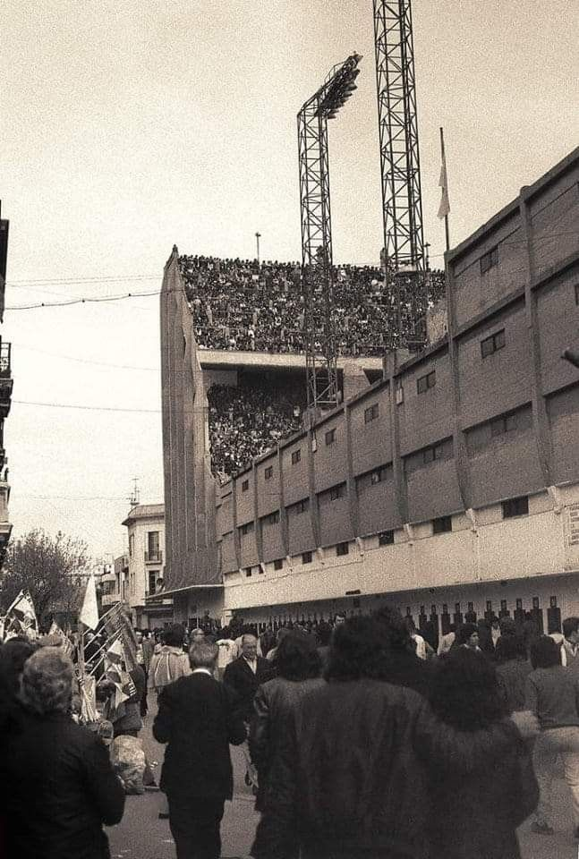

Los primeros años
1. Por qué Boca es indiscutiblemente el club más grande de Argentina y América
El Club Atlético Boca Juniors es considerado por millones de hinchas y por diversas mediciones históricas como el club más grande de Argentina y de toda América debido a una combinación única de grandeza deportiva, popularidad masiva y mística inigualable. Es el único equipo argentino que nunca descendió de Primera División desde el inicio del profesionalismo en 1931, ostenta el récord de 74 títulos oficiales (sumando nacionales e internacionales), y lidera el continente con 22 conquistas internacionales, entre ellas 6 Copas Libertadores y 3 Copas Intercontinentales. Su hinchada, autodenominada “La Mitad Más Uno”, es la más numerosa del país (con más de 300.000 socios en los últimos años) y una de las más apasionadas del mundo. El Superclásico contra River Plate es considerado por medios internacionales como el espectáculo deportivo más intenso del planeta. Esta combinación de títulos, fidelidad popular y peso cultural lo convierten en un gigante indiscutible, más allá de cualquier debate.

2. Los primeros años: fundación y acontecimientos clave
El Club Atlético Boca Juniors nació el 3 de abril de 1905 en el corazón del barrio de La Boca, cuando un grupo de adolescentes hijos de inmigrantes italianos (principalmente genoveses) —entre ellos Esteban Baglietto, Alfredo Scarpati, Santiago Sana y los hermanos Farenga— se reunió en la casa de Baglietto y luego en un banco de la Plaza Solís para fundar una institución que representara a su barrio obrero y portuario. El nombre “Boca Juniors” combinaba la identidad del lugar con un toque inglés de moda en la época. Los primeros años fueron de humildad y esfuerzo: jugaban en potreros, cambiaron varias veces de camiseta hasta adoptar el azul y amarillo inspirados en la bandera de un barco sueco que pasó por el puerto, y disputaron su primer partido oficial el 21 de abril de 1905 con una goleada 4-0. Debutaron en Primera División en 1913 y lograron su primer título de liga en 1919, iniciando una década dorada con seis campeonatos locales en los años 20. Sin embargo, también hubo momentos duros: mudanzas constantes de cancha por falta de recursos, la rivalidad naciente con River Plate (que se profundizaría con el tiempo) y la lucha por consolidarse en un fútbol amateur aún dominado por otros clubes. Aquellos inicios forjaron el carácter xeneize: garra, identidad barrial y pasión popular.

3. Por qué La Bombonera es el símbolo del templo del fútbol mundial
La Bombonera (oficialmente Estadio Alberto J. Armando) es mucho más que un estadio: representa el templo del fútbol mundial por su arquitectura única, su atmósfera intimidante y la pasión que se vive en sus tribunas. Inaugurada el 25 de mayo de 1940, su diseño en forma de “D” con tres bandejas superpuestas muy empinadas —inspirado, según la anécdota del arquitecto Viktor Sulčič, en una caja de bombones— genera una acústica legendaria y una sensación de cercanía entre el público y el campo que pocos escenarios igualan. Se dice que “no tiembla, late” con el rugido de la hinchada. Medios como The Observer la colocaron en el primer puesto de los espectáculos deportivos que hay que ver antes de morir (por el Superclásico), mientras que FourFourTwo la eligió en varias ocasiones como el mejor estadio del mundo. Para los hinchas de Boca, es el lugar donde la mística xeneize se hace carne: un símbolo de identidad barrial, garra y fiesta popular que trasciende el deporte y se convirtió en destino obligado para turistas y amantes del fútbol de todo el planeta.